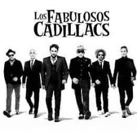

Los Fabulosos Cadillacs es una banda argentina de ska proveniente de Buenos Aires y
fundada en 1984. Llevan grabados 16 álbumes y a lo largo de sus distintas eras colaboraron
con distintos artistas argentinos e internacionales, obteniendo en el medio un gran
reconocimiento crítico y comercial. Varios de sus trabajos han sido incluidos en listas de
mejores álbumes de rock latinoamericano (Al borde, Rolling Stone Argentina) y han recibido
nominaciones y premios de MTV Latinoamérica, Premios Gardel, Fundación Konex y Grammy.
Su último álbum de estudio se titula La salvación de Solo y Juan (2016), para cuya promoción
realizaron festivales y conciertos en Latinoamérica, Estados Unidos, Europa y Asia.
La historia de Los Fabulosos Cadillacs comienza en 1984, cuando se juntaron Mario Siperman,
Aníbal Rigozzi, Vicentico y Flavio Cianciarulo. Provenían de bandas efímeras gestadas
durante el colegio secundario entre 1982 y 1983, como Mantra, Spray, Maracaibo y Azur.
Ninguno de ellos sabía de música, pero formaron una agrupación solo por el gusto de tocar
siendo una banda subterránea. Tenían como influencias más fuertes a las bandas del revival
del ska en Inglaterra, tales como Madness, The Specials, The Selecter o English Beat, y de
ellos copiaban la imagen.
Luego de un tiempo fueron ingresando nuevos integrantes hasta llegar a ser ocho. A pesar de
que después de un tiempo la banda fue rotando de músicos, las voces principales (Vicentico
y Flavio Cianciarulo) nunca han cambiado.
Su primera presentación oficial con el nombre actual fue en un colegio de la Ciudad de
Buenos Aires, con una presentación que no fue muy aceptada por el público. Apenas empezaron
a circular el under, creció su convocatoria y llegaron a escenarios más grandes, radios y
medios gráficos. En abril de 1986 grabaron su disco debut, Bares y fondas, editado ese mismo
año.
Por un corto tiempo el grupo se llamó Cadillacs 57, en honor al modelo de auto (de la marca
de vehículos estadounidense Cadillac) del bajista del grupo, Flavio Cianciarulo y con el que
alcanzaron a hacer algunas actuaciones. En una reunión que tuvieron en la casa de Vicentico,
entre todos decidieron cambiar el nombre por consejo de su mánager entre 1985 y 1987, Poppy
Manzanedo. De allí surgió el nombre definitivo, Los Fabulosos Cadillacs, y Naco Goldfinger
diseñó el logo de la banda (el sombrero ska y su respectiva banda blanca y negra a cuadrados).